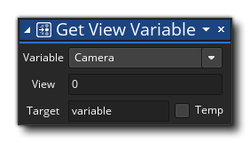

Beschreibung
Mit dieser Aktion können Sie den Wert bestimmter integrierter Variablen abrufen, die sich auf einen bestimmten Anzeige-Port beziehen. Sie wählen die View-Port-Variable aus, die abgerufen werden soll, geben dann den View-Port zum Ziel (von 0 bis 7) und schließlich die Zielvariable für den zurückgegebenen Wert (dies kann als temporäre lokale Variable gekennzeichnet werden). Der Ansichtsport ist der Bereich des Bildschirms, der zum Zeichnen einer bestimmten Kameraansicht verwendet wird (wie im Raumeditor eingerichtet). Die verschiedenen Variablen, die Sie auf diese Weise erhalten können, sind in der folgenden Tabelle aufgeführt:
Variable Beschreibung Kamera Der zurückgegebene Wert wird der eindeutige ID - Wert der Kamera sein, um den Hafen zu vergeben (siehe hier für weitere Informationen). Sichtweite Dies ergibt einen Wert von true oder false woher true ist, dass der Ansichtsport sichtbar ist (dh: er wird auf den Bildschirm gezeichnet), und false was bedeutet, dass nichts gezeichnet wird. Zeigen Sie Port X-Koordinate an Dies ist die X-Position des Ansichts-Ports innerhalb des Spielfensters. Zeigen Sie Y-Koordinate an Dies ist die Y-Position des View-Ports innerhalb des Spielfensters. Portbreite anzeigen Dies ist die Breite (in Pixeln) des Ansichtsanschlusses. Porthöhe anzeigen Dies ist die Höhe (in Pixel) des Ansichtsanschlusses. Zeigen Sie die Port-Oberflächen-ID an Dies gibt den eindeutigen ID-Wert für die Oberfläche zurück, die dem Ansichtsport zugewiesen ist, oder -1, wenn keine Oberfläche zugewiesen wurde.
Aktionssyntax:
Argumente:
Streit Beschreibung Variable Die integrierte Ansicht Variable zu bekommen View Der View-Port zum Targeting (von 0 - 7) Target Die Zielvariable, die den zurückgegebenen Wert enthält (kann als temporäre lokale Variable gekennzeichnet werden)
Beispiel:

Der obige Aktionsblockcode ruft die aktuelle Kamera-ID ab, die dem Anzeigeport [0] zugewiesen wurde, und prüft dann, ob sie mit der in einer globalen Variablen gespeicherten identisch ist. Ist dies nicht der Fall, ist die Kamera auf die neue Kamera eingestellt.